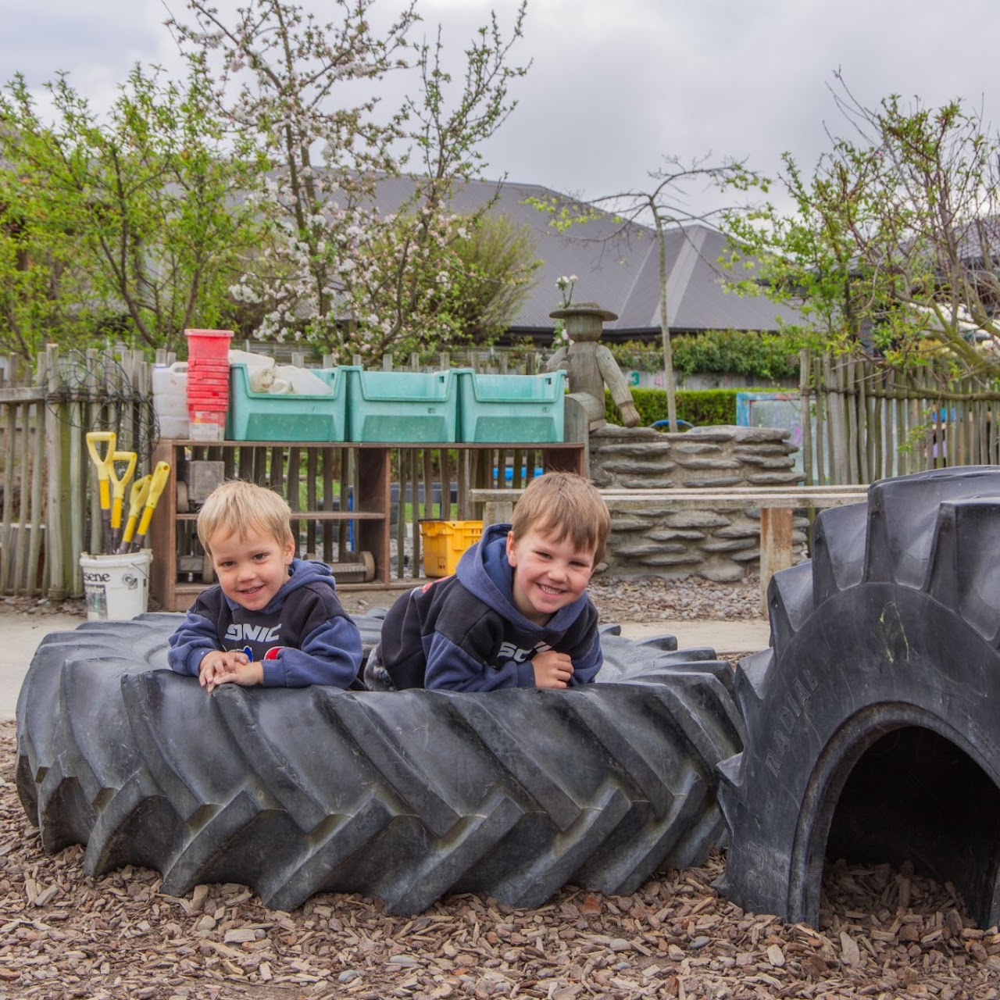
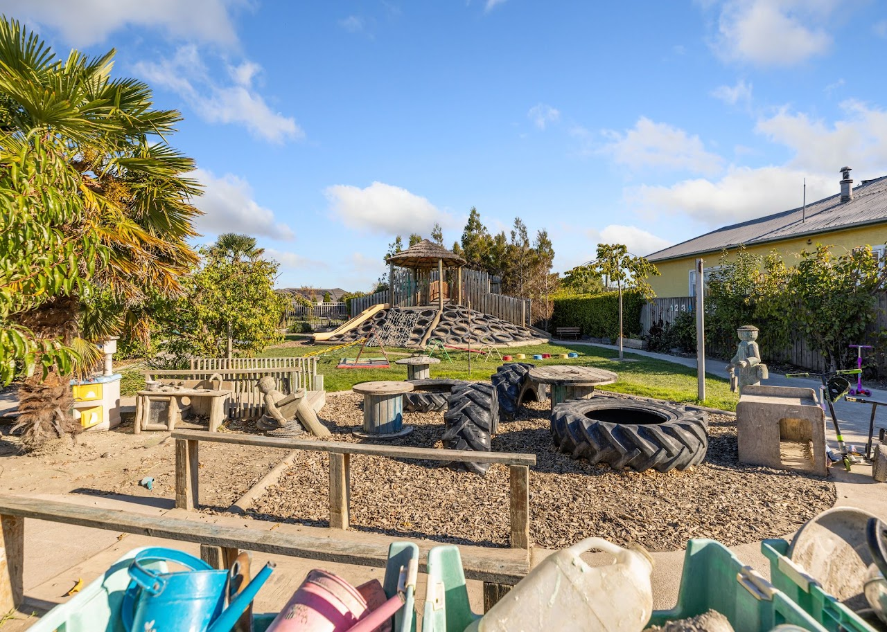

Early learning in Lincoln since 2011
Where tamariki grow confident, capable and curious.
A warm, nurturing early learning centre in Lincoln, privately owned and operated, with high-quality facilities in a purpose-built centre designed to support children's learning, development and wellbeing.

Kia ora, welcome
Welcome to Whippersnappers Early Learning Centre
Whippersnappers Early Learning Centre was established in 2011 in Lincoln and is privately owned and operated. We offer high-quality facilities in a purpose-built centre designed to support children's learning, development and wellbeing.
We provide a warm, nurturing environment where tamariki are known as individuals, supported to develop confidence and independence, and encouraged to become capable and curious learners.
Our curriculum
Built around every child
Our curriculum is built around each child's individual interests, strengths and learning goals. Through intentional teaching, meaningful play and strong relationships, we support children to develop the social and emotional skills, literacy and numeracy foundations they need for life and learning.

Why Whippersnappers
What makes us different
We are proud of the things that make Whippersnappers different:
- An individual, goal-based curriculumthat recognises every child as unique
- Clear, evidence-based assessmentthat shows children's learning and progress over time
- A strong focus on social and emotional competenceincluding confidence, resilience, relationships and problem-solving
- Intentional support for literacy and numeracywoven naturally through children's everyday learning
- A large outdoor environmentwith space to climb, run, explore, take appropriate risks and be physically active
- Consistent, trusting relationshipssupported by a stable team of experienced kaiako
- A specialised Transition to School programmedeveloped with our local school community
Enrol with us
Contact us
To ask about enrolling your child, or with any questions about our centre, please call or email us. We'd love to hear from you.
Phone
Postal address
PO Box 69259
Lincoln
New Zealand